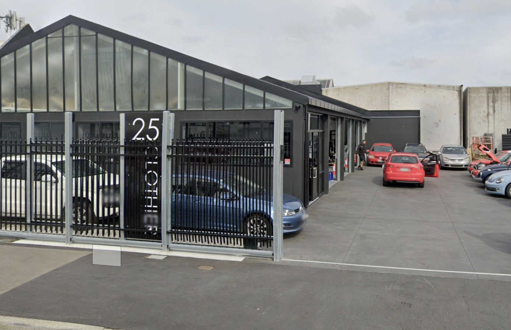

Servicing & maintenance
- 5,000 and 10,000km services
- Oil changes
- Warrant of Fitness
- Pre-purchase inspections
VW, Audi & Skoda servicing
Volkspower are Christchurch's most experienced Volkswagen and Audi specialists. We offer full service and repairs from our friendly, professional team at 25 Clothier Street, Phillipstown.

About Volkspower
Volkspower are Christchurch's most experienced Volkswagen and Audi specialists. We are passionate about Volkswagen and Audi vehicles, and we have an experienced and highly qualified team of professionals.
Do you need new, original or used parts, or need any auto or mechanical work done? We work on all types of new and used cars. Call now to talk to the experts at Volkspower about all your vehicle requirements.
Volkswagen and Audi are our speciality, and we service Skoda too. Beyond that, we work on all types of new and used cars, for both petrol and diesel vehicles.
A welcome from our General Manager
“At Volkspower, we know the importance of superior customer service and support as well as excellent knowledge of the numerous brands we represent.
I am proud to be part of the Volkspower team as I know we provide our clients with professional, friendly service within a welcoming environment.
I look forward to providing you with personal assistance with your parts and service needs.”
We offer full service & repairs
Regular servicing means hassle-free motoring. From routine 5,000 and 10,000km services to steering, suspension and ABS repairs, our team looks after your Volkswagen, Audi or Skoda, and any other new or used car, here in Christchurch.
Yes. Every service on this list is available for both petrol and diesel vehicles.
Tuning & diagnostics
We will keep you in tune with Autologic Diagnostics. At Volkspower Service & Spares we believe in only the best for our clients, which is why we exclusively supply Autologic Diagnostics.
Together with engine tuning and vehicle diagnosis from our experienced team, that means your Volkswagen or Audi is checked by specialists who know the brands.
Spares
Yes: quality spare parts at reasonable prices. Whether you need new, original or used parts, we have an abundance of well-priced quality spares.
We also keep a regularly updated range of cars that are due for recycling. Call or email the team to ask what we have for your vehicle.
Contact & location
Talk to our experienced, friendly team about servicing, repairs, tuning or spare parts. Call us during opening hours or send us an email enquiry at any time.
Volkspower Service & Spares
25 Clothier Street
Phillipstown, Christchurch
| Monday – Friday | 8:00am – 5:00pm |
|---|
Look for the large “25” sign at the gate on Clothier Street, Phillipstown.
View on Google Maps (opens in a new tab)